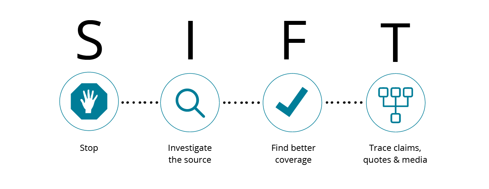
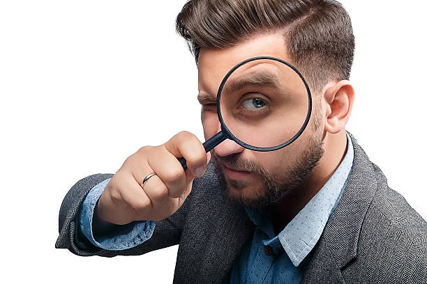

False news and misinformation are now a ubiquitous and pernicious presence in our digital realm.
The dissemination of untruths can have profound and far-reaching impacts, distorting public perception and causing harm to communities and individuals alike.
In this age of information saturation, it's essential to possess the know-how to recognize false news and take appropriate action.
Here are 7 tips to guide you in this vital endeavor:
1) Check the Source.

The most powerful way to detect fake news is to examine the source of the information. Fake news is often spread by sources that are unreliable and lack credibility.
These sources are often well-known for spreading false information or may be newly established websites with no proven record of providing credible content.
In order to protect yourself from being misled, it’s crucial to seek out information from credible and trustworthy sources, such as well-established news organizations, official government websites, or esteemed academic institutions.
These sources are widely recognized for providing accurate and reliable information.
2) Verify the Facts.

So you have verified the source, the next step is to verify the facts presented in the article. Fake news often contains misinformation or exaggerated claims that you can easily debunk with little research.
Fact checking websites like Snopes, PolitiFact, or FactCheck.org are some of the websites one can use to verify the accuracy of the information. Websites such as these are dedicated to investigating and exposing false news and misinformation, and they are a valuable resource for anyone looking to verify the accuracy of what they’ve found. When using these websites, look for evidence to support the claims made in the article.
This may include sources, data, or expert opinions. If you are unable to verify these claims, or if the evidence is weak, the information might be false. Also, you can contact experts in the field to get their perspective on the accuracy of the information. This is especially useful if the information is of a technical nature.
By taking these steps, you are protecting yourself and others from being misled by false news.
3) Examine The Evidence.

It is crucial to take a thorough approach when assessing the reliability of any information.
One effective method is to gather multiple perspectives and sources, which can assist in confirming or disproving the information and provide a more comprehensive and accurate representation of the truth.
For example, if you happen upon an article making claim about a certain event, it’s always a good idea to check other news outlets, social media platforms, or even official statements from relevant organizations to confirm if they are reporting the same information. If you can confirm the veracity of the information from multiple sources, it’s more like to be accurate.
However, if the information being reported varies widely, it could be a sign of false news If necessary, seeking the opinions of specialists in the relevant field can help to validate the information in question.
For instance, if an article announces a scientific advancement, it would be prudent to verify the claim with expert scientists or scientific organizations.
4) Check The Date Of Publication .

Checking and confirming the date a piece of information was published is a critical aspect of determining its credibility.
In today’s fast paced digital world, information can quickly become outdated, leading to misconceptions and misunderstandings. It is also important to consider that outdated information may have been proven incorrect or dispelled at a later time, therefore verifying that the information being evaluated is recent and up-to-date is of utmost significance.
Be wary of news that includes misleading or false information, made to look like it comes from a reputable source. These articles may include old dates to appear legitimate, so checking the date of publication helps you determine the information’s relevancy and how recent it is.
6)Consider the Motive.
Consider why the information is being shared. False news is often spread for financial gain, political gain, or to spread an agenda.
7)Look At The Big Picture.
Look at the Big Picture: Context is key when evaluating the credibility of information. Look at the issue or event as a whole and consider the source of the information in the context of the bigger picture.
Want To Report Fake News? .

One way to report false news is by informing the website or platform where it was found. Many websites and platforms have established procedures for reporting false or misleading information, and utilizing these procedures can aid in stopping the spread of false news.
Additionally, reporting false news to fact-checking organizations can also be an effective way of putting an end to its circulation. These organizations are devoted to verifying information and correcting misinformation, and they can help spread the word that the information is incorrect.
Keep in mind that reporting false news is not only important for protecting others from being misled, but it also promotes accuracy and trustworthy information. When false news is reported and corrected, it helps to build a more informed and reliable community, and it helps to stop the spread of harmful and inaccurate information.